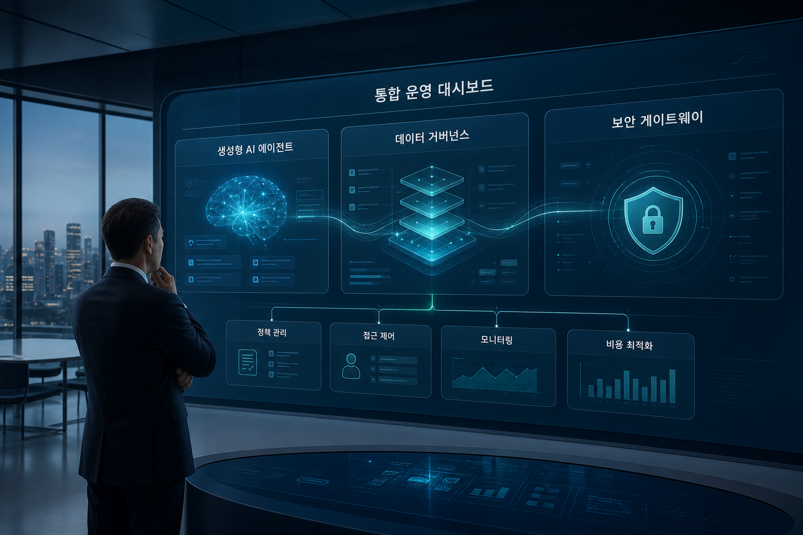
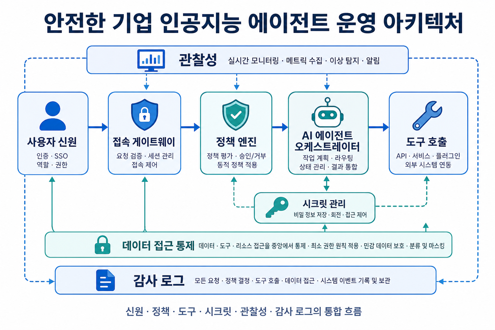
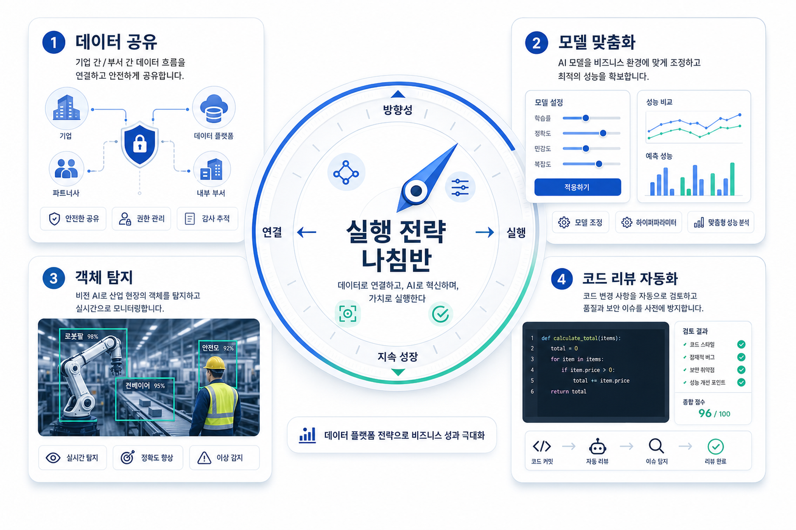

아마존 게임리프트 서버 분산서비스거부 보호 기능으로 플레이어 상시 보호
실시간 멀티플레이어 게임 서버의 분산서비스거부 방어를 상시 보호 구조로 전환하는 기능 소개다. 서버 인터넷주소 은닉, 플레이어 게이트웨이 토큰, 플레이어별 제한이 핵심이다.
오늘 수집한 아마존웹서비스 블로그는 생성형 인공지능 에이전트의 운영 보안, 데이터 거버넌스, 모델 맞춤화, 코드·시각 검증 자동화가 하나의 기업 운영 체계로 수렴하고 있음을 보여줍니다.

실시간 멀티플레이어 게임 서버의 분산서비스거부 방어를 상시 보호 구조로 전환하는 기능 소개다. 서버 인터넷주소 은닉, 플레이어 게이트웨이 토큰, 플레이어별 제한이 핵심이다.
다계정 레드시프트 데이터 공유에서 세이지메이커 통합 스튜디오의 게시·구독 거버넌스와 소스 컴퓨트 격리를 동시에 만족하는 패턴을 검증한다.
하이브 사례는 데브옵스 에이전트와 사내 모델 컨텍스트 프로토콜 서버를 결합해 오류 감지, 자율 조사, 이슈 생성, 병합 요청 리뷰를 자동화한 운영 모델을 보여준다.
노바 포지에서 도메인 특화 모델을 만들 때 체크포인트 선택, 데이터 혼합, 학습률, 배치 크기, 정규화가 성능과 범용능력 보존을 좌우한다.
노바 2 라이트가 자연어 프롬프트만으로 이미지 내 객체를 탐지하고 경계상자 좌표를 구조화된 제이슨으로 반환하는 서버리스 구현을 설명한다.
배즈는 요구사항·디자인·실제 실행 화면을 연결해 코드 차이만 보는 리뷰를 제품 의도 검증 중심의 에이전트 리뷰로 확장했다.
하이브와 배즈 사례, 에이전트코어 게이트웨이·아이덴티티 글은 에이전트가 로그, 코드, 티켓, 브라우저, 외부 응용프로그램 인터페이스를 호출하는 실제 운영 주체가 되었음을 보여줍니다.
세이지메이커 통합 스튜디오와 레드시프트 공유 패턴은 카탈로그 게시·구독과 실제 질의 컴퓨트의 책임 경계를 분리해야 한다는 점을 강조합니다.
노바 포지 글은 체크포인트, 데이터 혼합, 학습률, 평가 지표를 함께 관리하지 않으면 도메인 성능 향상이 범용 능력 손실로 이어질 수 있음을 설명합니다.

에이전트 운영 체계는 신원, 게이트웨이, 도구, 시크릿, 관찰성의 결합으로 완성됩니다.
| 적용 영역 | 오늘의 신호 | 기업 적용 방식 | 우선 점검 질문 |
|---|---|---|---|
| 운영 자동화 | 데브옵스 에이전트와 사내 도구 연결 | 서비스 카탈로그와 로그·코드·티켓 연결부터 표준화 | 서비스 이름과 계정·클러스터 매핑이 자동 갱신되는가 |
| 보안 게이트웨이 | 인증 코드 흐름과 시크릿 참조 | 사용자 신원 기반 도구 접근과 중앙 시크릿 정책 적용 | 에이전트가 호출하는 모든 도구에 사용자·권한·감사 기록이 남는가 |
| 데이터 플랫폼 | 레드시프트 공유와 세이지메이커 카탈로그 | 게시자·소스 계정·컨슈머 컴퓨트 경계를 명확화 | 거버넌스 승인과 질의 비용 책임이 분리되어 있는가 |
| 모델·시각 인공지능 | 노바 포지와 노바 2 라이트 | 도메인 모델 맞춤화와 빠른 시각 업무 검증을 병행 | 성능 향상뿐 아니라 범용능력 손실과 결과 정확도를 측정하는가 |
계열사별 데이터·컴퓨트 분리 요구가 강한 한국 대기업은 카탈로그와 컴퓨트 격리를 동시에 만족하는 아키텍처 검증이 필요합니다.
하이브 사례처럼 한 명 또는 작은 팀이 도구 계층과 파이프라인을 설계해 반복 조사를 자동화하는 패턴은 국내 운영조직에 직접 적용 가능합니다.
에이전트가 실제 도구를 호출하는 순간, 프롬프트 보안만으로는 부족합니다. 신원, 시크릿, 토큰, 감사 로그를 조달·보안 기준에 맞춰야 합니다.
에이전트가 접근할 시스템, 계정, 권한, 서비스 명칭, 데이터 위치를 표준 카탈로그로 정리합니다.
원격 도구 호출은 인증 코드 흐름, 토큰 검증, 시크릿 관리자 참조, 감사 로그를 통과하도록 설계합니다.
코드 리뷰, 미리보기 화면, 객체 탐지, 데이터 공유 결과를 사람이 나중에 확인하는 절차가 아니라 자동 검증 단계로 편입합니다.
학습률이나 데이터 혼합보다 먼저 업무 성공 지표, 범용능력 보존 지표, 비용 한도를 정합니다.

에이전트가 여러 도구를 연결할수록 실제 권한 범위가 커집니다. 최소 권한, 사용자별 토큰, 도구별 감사가 필요합니다.
브라우저 자동화나 객체 탐지가 그럴듯한 결과를 보여도 실제 요구사항 충족 여부는 별도 기준과 표본 검증으로 확인해야 합니다.
모델 호출, 미세조정, 시각 처리, 데이터 공유 쿼리는 사용량이 늘수록 비용 구조가 빠르게 바뀝니다. 예산 알림과 단위 비용 추적이 필수입니다.
| 제목 | 블로그 | 발행일 | 주요 기술 | 링크 |
|---|---|---|---|---|
| 아마존 게임리프트 서버 분산서비스거부 보호 기능으로 플레이어 상시 보호 | 아마존웹서비스 한국 기술 블로그 | 2026-06-02 | 아마존 게임리프트, 클라우드워치 | 원문 보기 |
| 아마존 세이지메이커 통합 스튜디오에서 계정 간 아마존 레드시프트 데이터 공유 거버넌스 패턴 검증 | 아마존웹서비스 한국 기술 블로그 | 2026-06-02 | 아마존 세이지메이커, 아마존 레드시프트, 시크릿 관리자 | 원문 보기 |
| 아마존웹서비스 데브옵스 에이전트와 맞춤 모델 컨텍스트 프로토콜 서버를 활용한 하이브의 인시던트 자동 조사 체계 구축 사례 | 아마존웹서비스 한국 기술 블로그 | 2026-06-02 | 아마존 베드록, 아마존웹서비스 데브옵스 에이전트, 모델 컨텍스트 프로토콜 | 원문 보기 |
| 아마존 노바 포지 초매개변수 최적화의 전략과 실무 | 아마존웹서비스 기계학습 블로그 | 2026-06-03 | 아마존 노바, 아마존 세이지메이커, 람다 | 원문 보기 |
| 아마존 노바 2 라이트를 활용한 객체 탐지 | 아마존웹서비스 기계학습 블로그 | 2026-06-03 | 아마존 베드록, 아마존 노바, 람다 | 원문 보기 |
| 배즈가 베드록 에이전트코어로 인공지능 코드 리뷰 정확도를 높인 방식 | 아마존웹서비스 기계학습 블로그 | 2026-06-03 | 아마존 베드록, 베드록 에이전트코어, 아마존 세이지메이커 | 원문 보기 |
| 에이전트코어 게이트웨이와 모델 컨텍스트 프로토콜 클라이언트를 위한 안전한 인증 코드 흐름 | 아마존웹서비스 기계학습 블로그 | 2026-06-02 | 아마존 베드록, 베드록 에이전트코어, 모델 컨텍스트 프로토콜 | 원문 보기 |
| 베드록 에이전트코어 아이덴티티에서 직접 관리하는 시크릿 참조 | 아마존웹서비스 기계학습 블로그 | 2026-06-02 | 아마존 베드록, 베드록 에이전트코어, 아마존 세이지메이커 | 원문 보기 |
목적: 오늘의 핵심 트렌드
삽입 위치: 히어로 하단
프롬프트: 한국 대기업 임원 독자를 위한 클라우드 전략 블로그 대표 이미지. 아마존웹서비스 기반 생성형 인공지능 에이전트, 데이터 거버넌스, 보안 게이트웨이가 하나의 운영 대시보드로 연결되는 장면. 화면 안의 모든 문구는 한국어이며 과장된 로고나 상표는 넣지 않는다. 차분한 남색과 청록색, 고급 기술 매거진 스타일, 넓은 여백, 16대9 비율.
권장 비율: 16:9
대체 문구: 엔터프라이즈 인공지능과 클라우드 운영 대시보드 이미지
목적: 에이전트 운영 구조
삽입 위치: 에이전트 전략 섹션
프롬프트: 안전한 기업 인공지능 에이전트 운영 아키텍처를 설명하는 한국어 인포그래픽. 사용자 신원, 게이트웨이, 도구 호출, 시크릿 관리, 관찰성, 감사 로그가 흐름도로 연결된다. 모든 라벨은 한국어, 읽기 쉬운 큰 글자, 로고 없음, 16대9 비율.
권장 비율: 16:9
대체 문구: 에이전트 보안 게이트웨이와 관찰성 흐름 인포그래픽
목적: 데이터와 모델 실행 전략
삽입 위치: 실행 로드맵 섹션
프롬프트: 한국 기업 데이터 플랫폼 전략을 표현하는 블로그 삽화. 데이터 공유, 모델 맞춤화, 객체 탐지, 코드 리뷰 자동화가 네 개의 카드로 배치되고 중앙에는 실행 전략 나침반이 있다. 모든 텍스트는 한국어, 선명한 카드형 구성, 16대9 비율.
권장 비율: 16:9
대체 문구: 데이터 공유와 모델 실행 전략을 보여주는 카드형 이미지